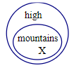
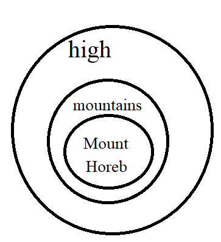
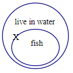
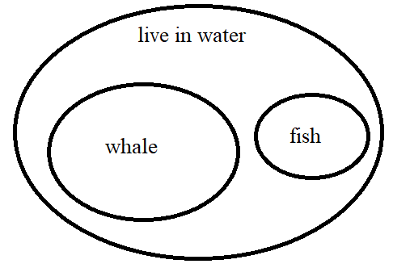
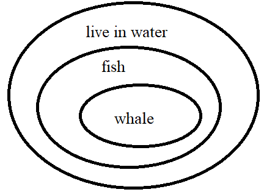

If there is one prayer that you should pray/sing every day and every hour, it is the
LORD's prayer (Our
FATHER in Heaven prayer)
It is the most powerful prayer.
A pure heart, a clean mind, and a clear conscience is necessary for it.
- Samuel Dominic Chukwuemeka
For in GOD we live, and move, and have our being. - Acts 17:28
The Joy of a Teacher is the Success of his Students. - Samuel
Chukwuemeka
I greet you this day,
First: read the notes. Second: view the videos. Third: solve the questions/solved examples. Fourth: check your solutions with my thoroughly-explained solutions. Fifth: check your solutions with the technologies as seen in the Videos. Sixth: check your solutions with the calculators as applicable.
The technologies used are Google Spreadsheet and Microsoft Excel (many thanks to the developers).
Comments, ideas, areas of improvement, questions, and constructive criticisms are welcome. You may
contact me.
If you are my student, please do not contact me here. Contact me via the school's system. Thank you.
Samuel Dominic Chukwuemeka (Samdom For Peace) B.Eng.,
A.A.T, M.Ed., M.S
Story
A family of Dad, Mom, and two children: a boy and a girl
Mom: Please go outside and observe the sky.
The two children run outside, spend some time, and come back inside
Girl: Mom, the sky is blue. Boy: Mom, the sky is not blue. Girl: It is blue. Boy: It is not blue. Dad: Okay, let's say we do not want to get in trouble.
Let's say we want to be safe and say the truth. Girl: Then, believe me Dad. Go ahead and take a look. It is blue. Mom: Alright my princess, we want to accommodate what your brother said.
We want to accommodate what you said and what your brother said.
And still say the truth to be on the safe side...
Can you make a true statement in that regard? Girl: I do not understand, Mom.
Please explain. Dad: How do you join the two simple statements - the one you said, and the one your
brother said; into one true compound statement?
You have learned connectives in English Language. Right? Girl: Yes, Dad.
The compound statement would be: "The sky is blue OR the sky is not blue".
That way, it is either the sky is blue or the sky is not blue.
That is a true statement. Mom: Correct!
In Mathematical Logic, we call that statement a tautology. Girl: What is a tautology? Dad: Tautology is a statement that is always true.
What is the "OR" known as? Boy: It is disjunction. Dad: That is correct. Boy: What is Mathematical Logic? Mom: It is one of the topics covered in Discrete Mathematics. Girl: What is Discrete Mathematics? Dad: It is one of the branches of Mathematics.
Can you form a statement that makes the two statements a false compound statement? Boy: "The sky is blue AND the sky is not blue".
The "AND" is conjunction. Mom and Dad: Correct!
In Mathematical Logic, we call that statement a contradiction. Girl: It seems Mathematical Logic has a connection with what we are learning in English Language.
Dad and Mom: Yes, it does!
Interdisciplinary connection - Mathematics and English! Girl: So, I guess ... a contradiction is a statement that is always false. Dad: You are right! Girl: But, how can that even be?
It does not make sense for the sky to be blue and also not to be blue. Dad: That is the reason why it is called a contradiction... it is a statement that is never
true
It looks like the statement from that politician! - contradicting himself as usual
When a lot of people say the sky is blue, that politician will say the sky is blue.
When those same people turn around and say the sky is not blue, the politician will also say the
sky is not blue.
When some of those people say the sky is blue, and the rest of them say the sky is not blue; the
politician will say well: "the sky is blue and the sky is not blue". Girl: Dad, I think I know the politician you are talking about. Dad: Whatever...
The entire family mention the politician's name and laugh...
Overview
Objectives
Students will:
(1.) Discuss mathematical logic.
(2.) Discuss propositional logic.
(3.) Discuss predicate logic.
(4.) Identify logical statements/propositions.
(5.) Draw truth tables for logical statements: Propositional Logic.
(6.) Discuss logical connectives.
(7.) Negate simple propositions: Propositional Logic.
(8.) Negate quantifiers: Propositional Logic and Predicate Logic.
(9.) Draw truth tables for the logical connectives: Propositional Logic.
(10.) Write logical statements in symbolic logic: Propositional Logic.
(11.) Write symbolic logic as logical statements: Propositional Logic.
(12.) Draw truth tables for compound logical statements: Propositional Logic
(13.) Determine the validity or invalidity of symbolic arguments: Propositional Logic.
(14.) Discuss logical equivalences: Propositional Logic.
(15.) Prove logical equivalences using truth tables: Propositional Logic.
(16.) Discuss quantifiers and nested quantifiers: Predicate Logic.
(17.) Discuss logical equivalences: Predicate Logic.
(18.) Prove logical equivalences using the laws of logic: Propositional Logic and Predicate Logic.
(19.) Determine the validity or invalidity of syllogistic arguments: Euler Diagrams.
(20.) Determine the validity or invalidity of syllogistic arguments: Predicate Logic.
(21.) Discuss logic circuits.
(1.) Aristotle (Syllogistic Arguments)
(2.) George Boole (Boolean Circuits)
(3.) Leonhard Euler (Euler Diagrams)
(4.) Augustus De Morgan (De Morgan's Law)
(5.) John Venn (Venn Diagrams)
... and many more...
Why Study Logic
(1.) Logic is the basis for many mathematical reasoning, proofs, and formulas.
(2.) It determines whether an argument is valid or invalid.
(3.) It is used in the design of electric circuits.
... and more...
Introduction
Logical Statement
This is also known as Logical Proposition
A logical statement is a declarative sentence that is either true or false but not both.
Teacher: Bring it to English Language
What is a declarative sentence?
If the statement is true, we assign it a truth value of T.
If the statement is false, we assign it a truth value (not false value ☺) of
F.
It can also be defined as a statement that makes a claim (either an assertion or a denial). It may be
either true or
false and it must have the structure of a complete sentence.
Teacher: Note that: T and F are uppercase letters.
Are all statements logical statements?
What do you think?
All statements are not logical statements.
Questions are not logical statements.
Requests are not logical statements.
Commands are not logical statements.
Examples: Logical Statements
Identify whether the following statements are logical statements.
If they are logical statements, state their truth values.
If they are not logical statements, give reason(s) why they are not logical statements.
Statements
Answers
(Click "Answer:" to show/hide answers)
(1.) The capital of Nigeria is Abuja.
This is a logical statement.
The truth value is T
(2.) The capital of the U.S state of Alabama is Georgia.
This is a logical statement.
The truth value is F
(3.) Please sit down.
This is not a logical statement.
It is a request.
(4.) Sit down.
This is not a logical statement.
It is a command.
(5.) Mathematics is fun.
This is a logical statement. The truth value depends on the respondent. ☺
(6.) Do you like Mr. C?
This is not a logical statement.
It is a question.
Propositional Logic
Propositional Logic is the study of logical statements.
It is also referred to as Statement Logic, Sentential Logic, Propositional Calculus, or
Sentential Calculus.
Symbolic Logic
Symbolic Logic is the representation of logical statements with symbols.
We represent:
One logical statement with $p$
Two logical statements with $p$ and $q$;
the first statement is $p$ and the second statement is $q$
Three logical statements with $p$, $q$, and $r$;
the first statement is $p$, the second statement is $q$, and the third statement is $r$
Four logical statements with $p$, $q$, $r$, and $s$;
the first statement is $p$, the second statement is $q$, the third statement is $r$, and the fourth
statement is $s$
Five logical statements with $p$, $q$, $r$, $s$, and $t$;
the first statement is $p$, the second statement is $q$, the third statement is $r$,
the fourth statement is $s$, and the fifth statement is $t$
and so on...and so forth...
Propositional Logic uses Symbolic Logic. In other words, it uses symbols to represent logical
statements.
When someone makes: One statement, that statement could be true or it could be false.
This means that $p$ could have a truth value of $T$ or could have a truth value of $F$
So, the two possibilities for $p$ could be $T$ or $F$
Two statements,
both statements could be true: the first statement, $p$ could be $T$ and the second statement, $q$ could
be $T$
the first statement, $p$ could be $T$ and the second statement, $q$ could be $F$
the first statement, $p$ could be $F$ and the second statement, $q$ could be $T$
both statements could be false: the first statement, $p$ could be $F$ and the second statement, $q$
could be $F$
So, here we have four possibilities
Do we need to keep writing this in English?
Would it not be better to represent it in a table?
Such a table is known as a ...
A Truth Table is a table that shows the truth values of logical statements.
One statement = $p$
One statement = $2$ possibilities.
Truth Table for One Statement
$p$
$T$
$F$
Two statements = $p, q$
Two statements = $4$ possibilities
Truth Table for Two Statements
$p$
$q$
$T$
$T$
$T$
$F$
$F$
$T$
$F$
$F$
Teacher: What about three statements?
How many possibilities do you think are there for three statements?
Can you draw the truth table?
Ask students to draw the truth table for three statements.
Please note the differences.
Some of them may have only $6$ possibilities. Some may have $7$. Some may have $8$
Even for the ones that have $8$ possibilities, the order may be different for each row.
The seventh row for Student A may be different from the seventh row for Student B even if
both
students have $8$ possibilities.
Emphasize to students the importance of order in mathematics, in logic, in thought, in life.
Student: Is there any way of knowing how many possibilities exist for the number of logical
statements?
How do we know the order of representing the truth values in a truth table?
Three statements = $3 = p, q, r$
Three statements = $2^3 = 8$ possibilities
Truth Table for Three Statements
$p$
$q$
$r$
$T$
$T$
$T$
$T$
$T$
$F$
$T$
$F$
$T$
$T$
$F$
$F$
$F$
$T$
$T$
$F$
$T$
$F$
$F$
$F$
$T$
$F$
$F$
$F$
Draw the truth table for four statements.
Try this one.
Then, click the solution to check your answer.
Four statements = $4 = p, q, r, s$
Four statements = $2^4 = 16$ possibilities
Truth Table for Four Statements
$p$
$q$
$r$
$s$
$T$
$T$
$T$
$T$
$T$
$T$
$T$
$F$
$T$
$T$
$F$
$T$
$T$
$T$
$F$
$F$
$T$
$F$
$T$
$T$
$T$
$F$
$T$
$F$
$T$
$F$
$F$
$T$
$T$
$F$
$F$
$F$
$F$
$T$
$T$
$T$
$F$
$T$
$T$
$F$
$F$
$T$
$F$
$T$
$F$
$T$
$F$
$F$
$F$
$F$
$T$
$T$
$F$
$F$
$T$
$F$
$F$
$F$
$F$
$T$
$F$
$F$
$F$
$F$
Logical Connectives
Vocabulary Words
Bring it to English: connect, connection, connecting, simple sentence, compound sentence,
conjunction, disjunction,
Bring it to Physics/Electronics: connectivity
Bring it to Logic: connective, simple proposition, compound proposition,
Logical Connectives "connects" simple propositions/statements to form compound
propositions/statements.
They are:
Name
Symbol
Terms Used
Example
Negation
$\neg$ or $\sim$
Not
It is not true that...
It is not the case that...
It is false that...
$\neg p$ means Not $p$
$\neg q$ means Not $q$
Conjunction
$\land$
And
But
$p \land q$ means $p$ And $q$
Disjunction (Inclusive Disjunction)
$\lor$
Or
Either this or that or both
$p \lor q$ means $p$ Or $q$
Exclusive Disjunction
$\underline{\lor}$
$\oplus$
$XOR$
Either this or that but not both
$p\underline{\lor} q$ means Either $p$ or $q$ but not both
Conditional
$\rightarrow$
If, then
implies, etc
$p \rightarrow q$ means:
If p then q
If p, q p implies q p is sufficient for q
a sufficient condition for q is p q is necessary for p
a necessary condition for p is q p only if q
Only if q, p q if p q when p q whenever p q follows from p q unless not p
Biconditional
$\leftrightarrow$
If and only if
iff, etc
$p \leftrightarrow q$ means: p if and only if q p is necessary and sufficient for q
If p then q; if q then p
Let us discuss these connectives.
Negation
Negation of a logical statement is the opposite of the truth value of that statement.
The negation of a true statement is a false statement.
The negation of a false statement is a true statement.
Given: a simple proposition
A simple proposition is a logical statement that contains only a subject and a verb. Example 1: Negation of Simple Statement
$p$: The sky is blue.
$\neg p$: The sky is not blue. OR
$\neg p$: It is not true that the sky is blue. OR
$\neg p$: It is not the case that the sky is blue. OR
$\neg p$: It is false that the sky is blue.
The truth table is shown:
$p$
$\neg p$
$T$
$F$
$F$
$T$
Teacher: What about Quantifiers?
How do we negate quantifiers? Student: What are quantifiers?
A Quantifier is an expression that expresses the quantity of a proposition.
Quantifiers use generalized words such as: all, some, none, no, etc.
Ask students to negate the statement: $p$: All animals can fly.
Take note of the responses.
Note and correct the incorrect ones.
A common incorrect one is: $\neg p$: All animals cannot fly.
Notice that $p$ and $\neg p$ are $F$ and that is incorrect.
Note the correct ones which should be $T$....yes $\neg p$ should be $T$ because $p$ is $F$
Then, explain the importance of having an order...an agreed method/answer
Logic is about order
Mathematics is about order.
Method for Negating Quantifiers ($X$ Method)
All are$\searrow\searrow\searrow$
$\swarrow\swarrow\swarrow$None are; No are
Some are$\nearrow\nearrow\nearrow$
$\nwarrow\nwarrow\nwarrow$Some are not
Example 2: Negation of Quantifier
$p$: All animals can fly...$F$
$\neg p$: Some animals cannot fly...$T$
Example 3: Negation of Quantifier
$p$: No US president has been an only child...$T$
$\neg p$: Some US presidents have been the only children...$F$
Conjunction
Conjunction is a logical connective that joins two simple logical statements with the use of
AND, BUT to form a compound statement.
The compound statement formed by a conjunction is true only when both simple statements
are true.
Otherwise, it is false.
Let us review an example of these two simple statements joined by a conjunction Example: Conjunction
$p$: The capital of Nigeria is Abuja
$q$: The capital of the United States is Washington DC
$p \land q$: The capital of Nigeria is Abuja and the capital of the United States is Washington DC.
$p \land q$ is only $T$ when both $p$ and $q$ are $T$
If either $p$ or $q$ is $F$, it makes the compound statement $F$ Be careful how you use the word, AND, BUT
The truth table is shown:
$p$
$q$
$p \land q$
$T$
$T$
$T$
$T$
$F$
$F$
$F$
$T$
$F$
$F$
$F$
$F$
Disjunction
Disjunction is a logical connective that joins two simple logical statements with the use of
OR to form a compound statement.
This is also known as Inclusive Disjunction or Inclusive OR
This means Either this OR that OR both.
Sometimes, both is omitted in the statement.
However, please note that both is included in Inclusive Disjunction Inclusive Disjunctionincludesboth Exclusive Disjunctionexcludesboth (as we shall see further in our discussion)
The compound statement formed by a disjunction is false only when both simple
statements are false.
Otherwise, it is true.
Let us review an example of these two simple statements joined by a conjunction Example: Disjunction
$p$: The capital of Nigeria is Abuja
$q$: The capital of the United States is Washington DC
$p \lor q$: The capital of Nigeria is Abuja or the capital of the United States is Washington DC.
$p \lor q$ is only $F$ when both $p$ and $q$ are $F$
If either $p$ or $q$ is $T$, it makes the compound statement $T$
The truth table is shown:
$p$
$q$
$p \lor q$
$T$
$T$
$T$
$T$
$F$
$T$
$F$
$T$
$T$
$F$
$F$
$F$
Exclusive Disjunction
Exclusive Disjunction or Exclusive OR or $XOR$ is a logical connective that joins
two simple logical statements with the use of EITHER OR BUT NOT BOTH to form a compound
statement.
This means Either this OR that but not both.
The compound statement formed by an exclusive disjunction is false only
when both simple statements are true, and when both statements are false.
Otherwise, it is true.
Exclusive OR ($XOR$) is exclusively (not inclusively) "OR".
It has to be "either this or that". It cannot be both.
So, when it involves "both" in any way (whether both are $T$ or whether both are $F$,
the result is $F$.
Let us review an example of these two simple statements joined by a conjunction Example: Exclusive Disjunction
$p$: The capital of Nigeria is Abuja
$q$: The capital of the United States is Washington DC
$p \underline{\lor} q$: Either the capital of Nigeria is Abuja or the capital of the United States
is Washington DC but not both.
$p \underline{\lor} q$ is only $F$ when both $p$ and $q$ are $T$ and also when both $p$ and $q$ are $F$
If $p$ is $T$ and $q$ is $F$, or if $p$ is $F$ and $q$ is $T$, it makes the compound statement $T$
The truth table is shown:
$p$
$q$
$p \underline{\lor} q$
$T$
$T$
$F$
$T$
$F$
$T$
$F$
$T$
$T$
$F$
$F$
$F$
Have you observed some rooms with two switches:
When both switches are turned on, the light is off
When both switches are turned off, the light is off
When one switch is turned on, and the other switch is turned off; the light is on
Conditional
Let us explain this connective this way.
Remember the Hurricane Sandy that hit the East Coast in $2012$
Assume Mr. $Z$ is a meteorologist
He announced that Hurricane Sandy may hit the East Coast on a Friday.
But, he did announce that if Hurricane Sandy hits the East Coast on Friday, then power
lines will go off.
So, we have:
$p$: Hurricane Sandy hits the East Coast on Friday
$q$: Power lines will go off.
Because of his announcement, schools canceled classes; businesses were closed, and the city, county,
and state government offices were closed.
Then, Friday arrived.
Let us be honest in this response.
Think like most Americans (complainants by nature)...yes Americans complain a lot
If Hurricane Sandy actually hit the East Coast on Friday and power lines went off, would many people
complain? NO
This means that when both $p$ and $q$ are $T$; the conditional statement, $p \rightarrow q$ is $T$
If Hurricane Sandy actually hit the East Coast on Friday but power lines did not go off, would many
people
complain? YES. People would complain about lost revenue, lost opportunities, etc
This means that when $p$ is $T$ and $q$ is $F$; the conditional statement, $p \rightarrow q$ is $F$
If Hurricane Sandy did not hit the East Coast on Friday but power lines went off, would many people
complain? NO. This is because Mr. $Z$ used the word, $if$ Hurricane Sandy hit the East Coast
However, the hurricane did not hit.
The power lines went off due to some other reason(s).
So, Mr. $Z$ is not to be blamed.
This means that when $p$ is $F$ and $q$ is $T$; the conditional statement, $p \rightarrow q$ is $T$
If Hurricane Sandy did not hit the East Coast on Friday and power lines did not go off, would many
people
complain? NO. Again, Mr. $Z$ used the word, $if$ Hurricane Sandy hit the East Coast
The hurricane did not hit.
The power lines did not go off.
So, Mr. $Z$ is cool.
This means that when both $p$ and $q$ are $F$; the conditional statement, $p \rightarrow q$ is $T$
For $p \rightarrow q$,
$p$ is known as the premise or antecedent or hypothesis
$q$ is known as the consequent or conclusion
For $q \rightarrow p$,
$q$ is known as the premise or antecedent or hypothesis
$p$ is known as the consequent or conclusion
The conditional statement is only false when the premise is true and the conclusion is
false.
Otherwise, it is true.
$p \rightarrow q$ is only $F$ when $p$ is $T$ and $q$ is $F$
$q \rightarrow p$ is only $F$ when $q$ is $T$ and $p$ is $F$
Conditional is a logical connective that joins
two simple logical statements with the use of IF - THEN among others to form a compound
statement.
The compound statement formed by a conditional statement is false only
when the premise if true, and the conclusion is false.
Otherwise, it is true.
The truth table is shown:
$p$
$q$
$p \rightarrow q$
$q \rightarrow p$
$T$
$T$
$T$
$T$
$T$
$F$
$F$
$T$
$F$
$T$
$T$
$F$
$F$
$F$
$T$
$T$
Biconditional
Teacher: "Bi" means ... Student: $2$
Can you give examples of statements where "bi" is used? Teacher: "binomial" - a polynomial of two terms
"bilateral" - discussion between two countries
"bisect" - divide into two equal parts
I'm not gonna say the other one so I don't get in trouble ☺☺☺
"Bi" means it has to be $2$
"Biconditional" means that it has to apply to both statements
This means that when both statements are true, the biconditional statement is true
Also, when both statements are false; the biconditional statement is true.
But, when one statement is true and the other one is false, the biconditional statement is
false.
Biconditional is a logical connective that joins
two simple logical statements with the use of IF AND ONLY IF among others to form a compound
statement.
The compound statement formed by a biconditional statement is true only
when both simple statements are true, or when both statements are false.
Otherwise, it is false.
$p \leftrightarrow q$ is $T$ when $p$ is $T$ and $q$ is $T$, or when
when $p$ is $F$ and $q$ is $F$
$p \leftrightarrow q$ is $F$ when $p$ is $T$ and $q$ is $F$, or when
when $p$ is $F$ and $q$ is $T$
The biconditional statement is the reverse of the exclusive disjunction statement.
Have you observed some rooms with two switches:
When both switches are turned on, the light is on
When both switches are turned off, the light is on
When one switch is turned on, and the other switch is turned off; the light is off
The truth table is shown:
$p$
$q$
$p \leftrightarrow q$
$T$
$T$
$T$
$T$
$F$
$F$
$F$
$T$
$F$
$F$
$F$
$T$
Summary of the Truth Table of the Logical Connectives
$p$
$q$
$\neg p$
$\neg q$
$p \land q$
$p \lor q$
$p \underline{\lor} q$
$p \rightarrow q$
$q \rightarrow p$
$p \leftrightarrow q$
$T$
$T$
$F$
$F$
$T$
$T$
$F$
$T$
$T$
$T$
$T$
$F$
$F$
$T$
$F$
$T$
$T$
$F$
$T$
$F$
$F$
$T$
$T$
$F$
$F$
$T$
$T$
$T$
$F$
$F$
$F$
$F$
$T$
$T$
$F$
$F$
$F$
$T$
$T$
$T$
Symbolic Logic
Symbolic Logic is
Let us review what we have learned so far. Given: logical statements. To: represent them using symbols.
Let us begin with the PowerPoint presentation below.
Truth Tables
A truth table is a table that shows the truth values of logical statements.
We have been working with truth tables right from the introduction of this topic.
But, we shall go into details in this section.
We shall draw truth tables for compound logical statements.
Truth tables:
(1.) indicate whether a logical statement is a tautology, contraction, or a contingency.
(2.) are used to determine whether two statements are logically equivalent.
(3.) are used to analyze the validity or invalidity of arguments.
Student: What is "tautology"? Teacher: Good question.
Let me answer
Tautology is a statement that is always true.
All the truth values are true, T
Contradiction is a statement that is never true (always false).
All the truth values are false, F
Contingency is a statement that is neither a tautology nor a contradiction.
The statement has both true, $T$ and false, $F$ truth values.
There are basically two ways of drawing truth tables.
However, we shall use one method here - the method that is easily comprehensible.
You may contact me if you want to learn the other method.
To draw a truth table for any compound statement:
(1.) $p$ is always written first no matter the order of the statement.
(2.) $q$ is always written second (if there are two statements) no matter the order of the statement.
This includes for statements that has $\neg p$ but not $p$ and $\neg q$ but not $q$
$p$ would still be written first because you cannot get $\neg p$ without getting $p$ first.
Similarly, you need to get $q$ first before getting $\neg q$
(3.) Identify the "main" logical connective that connects the statements
(4.) Identify the "other" logical connectives that connects each statement as applicable
(5.) Deal with the individual statements.
(6.) Then, the last column should be the "main" logical connective that connects all the statements.
Examples: Truth Tables
Draw the truth tables for these statements.
Indicate whether the statement is a tautology, contradiction, or a contingency.
(1.) $p \lor \neg p$
The "main" logical connective is $\lor$
The two statements are: $p$, $\neg p$
$p$
$\neg p$
$p \lor \neg p$
$T$
$F$
$T$
$F$
$T$
$T$
First
Second
Tautology
This is a tautology.
But, can we analyze this statement in English Language?
Let:
$p$: The sky is blue.
$\neg p$: The sky is not blue.
$p \lor \neg p$: The sky is blue OR the sky is not blue.
Of course! It is either the sky is blue or the sky is not blue.
So, even without truth tables; the statement is true.
(2.) $p \land \neg p$
The "main" logical connective is $\land$
The two statements are: $p$, $\neg p$
$p$
$\neg p$
$p \land \neg p$
$T$
$F$
$F$
$F$
$T$
$F$
First
Second
Contradiction
This is a contradiction.
But, can we analyze this statement in English Language?
Let:
$p$: The sky is blue.
$\neg p$: The sky is not blue.
$p \lor \neg p$: The sky is blue AND the sky is not blue.
This looks like the statement from politicians! - contradicting themselves as usual
Even without truth tables; the statement is false.
(3.) $(p \rightarrow q) \leftrightarrow (\neg q \rightarrow \neg p)$
The "main" logical connective is $\leftrightarrow$
The first compound statement is: $p \rightarrow q$
The second compound statement is: $\neg q \rightarrow \neg p$
Can we analyze this statement in English Language?
Let:
$p$: We are humans.
$\neg p$: We are not humans.
$q$: We love our neighbors.
$\neg q$: We do not love our neighbors.
$(p \rightarrow q) \leftrightarrow (\neg q \rightarrow \neg p)$: Being humans implies loving our
neighbors if and only if not loving our neighbors implies not being humans.
That makes sense...as a true statement.
Conditional Statement and Variations of the Conditional Statement
The variations of the conditional statement are the:
(1.) Converse statement
(2.) Inverse statement
(3.) Contrapositive statement
Nigeria is one of the countries in the continent of Africa.
It is actually the Giant of Africa ... in name only
Sadly, it is a very rich country with many poor people.
Let:
$p$: I live in the country of Nigeria.
$q$: I live in the continent of Africa.
Let us analyze these statements:
(1.) Conditional Statement: $p \rightarrow q$
If I live in the country of Nigeria, then I live in the continent of Africa. True
Interchange the conditional statement
(2.) Converse Statement: $q \rightarrow p$
If I live in the continent of Africa, then I live in the country of Nigeria. Not necessarily true
Negate the conditional statement
(3.) Inverse Statement: $\neg p \rightarrow \neg q$
If I do not live in the country of Nigeria, then I do not live in the continent of Africa. Not necessarily true
Interchange, then negate the conditional statement
(4.) Contrapositive Statement: $\neg q \rightarrow \neg p$
If I do not live in the continent of Africa, then I do not live in the country of Nigeria. True
Student: Why are we learning this? Teacher: You will soon see... we want to establish something...
Let us see if some statements are equivalent.
Sometimes, two people may be saying the "same thing" logically without realizing it.
May we draw the truth table for these statements?
Then, we can compare the truth values of each of them.
$p$
$q$
$p \rightarrow q$
$q \rightarrow p$
$\neg p$
$\neg q$
$\neg p \rightarrow \neg q$
$\neg q \rightarrow \neg p$
$T$
$T$
$T$
$T$
$F$
$F$
$T$
$T$
$T$
$F$
$F$
$T$
$F$
$T$
$T$
$F$
$F$
$T$
$T$
$F$
$T$
$F$
$F$
$T$
$F$
$F$
$T$
$T$
$T$
$T$
$T$
$T$
Conditional
Converse
Inverse
Contrapositive
Teacher: Did you notice anything? Student: Yes.
The Conditional statement and the Contrapositive statement have the same truth values.
The Converse statement and the Inverse statement have the same truth values. Teacher: That is correct! Student: So, if someone says: If I live in Nigeria, then I live in Africa
and another person says: If I do not live in Africa, then I do not live in Nigeria
Does it mean they are saying the same thing? Teacher: Logically yes!
The Conditional statement and the Contrapositive statement have the same truth values.
This means that they are logically equivalent
$p \rightarrow q \equiv \neg q \rightarrow \neg p$
Also, the Converse statement and the Inverse statement have the same truth values.
This means that they are logically equivalent
$q \rightarrow p \equiv \neg p \rightarrow \neg q$
Student: Is this the only way - by drawing truth tables the only way to determine if two
statements
are logically equivalent? Teacher: Wow...I like your question.
What do you think? Student: Probably not Teacher: That's right. Truth tables is not the only of determining the logical equivalency of
two
statements.
We shall discuss another way in the next section.
This leads us to...
So far, we have been studying Propositional Logic.
We have been dealing with logical statements otherwise known as logical propositions.
As we learned, logical statements are declarative sentences that is true or false but not both.
However, these statements do not cover the statements regarding the functions of a
variable such as $f(x)$ or functions of two variables such as $f(x, y)$ among others.
For example; say we have a function:
$p(x) = x^2$
We cannot tell whether $p(x)$ is true or false.
We do not know the value of $x$...relating to the domain
We do not know the value of $p(x)$...relating to the range
Because we did not define the function in a certain domain, and because we did not define the range; we
cannot say
whether $p(x)$ is true or false.
Case 1:
But if we define $p(x) = x^2$ as an integer in the domain of integers
Then we can determine whether $p(x)$ is true or false in that domain
How do we determine it?
We randomly test several integers in the domain of integers
The domain: $D = \{x: x \in \mathbb{Z}\}$ is any integer.
So, we need to test the input/independent variable: $x$ with several integers.
We test at least one negative integer, zero, and at least one positive integer.
$
Test:\;\; x = -3 \\[3ex]
p(-3) = (-3)^2 = 9 \\[3ex]
Test:\;\; x = 0 \\[3ex]
p(0) = 0^2 = 0 \\[3ex]
Test:\;\; x = 3 \\[3ex]
p(3) = 3^2 = 9 \\[3ex]
$
We see that $p(x)$ is a true proposition because the range: $R = \{0, 9\}$ are integers.
Case 2:
But if we define $p(x) = x^2$ as a negative integer in the domain of integers
We see that $p(x)$ is a false proposition because the range: $R = \{0, 9\}$ are not negative integers.
In both cases: Case $1$ and Case $2$
The function: $p(x)$ is known as a propositional function or predicate or open
statement
It is an open sentence because $x$ can be any of the values taken from the domain.
The domain: $D$ is known as the domain of discourse or universe of discourse
The variable: $x$ is known as a free variable
Please note that the propositional function is just an ordinary function (not a logical statement) by
itself.
However, when it is defined in a domain for each value of it's variable; it becomes a logical statement.
Notice that when we defined the domain of discourse for the function, we did not put any restriction on
the domain.
In other words, we expect $p(x)$ to be defined for every $x$ in the domain.
Notice: for every $x$
We can also write: for all $x$
We can also write: for each $x$
We can also write: for any $x$
The phrases: for every, for all, for any, for each refer to universal quantifiers
represented by the symbol: $\forall$
This means that: for all $x$ is denoted by $\forall x$
The most commonly used phrase is for all
(Recall: we negated Quantifiers in propostional logic)
But the quantifiers we shall discuss in predicate logic are quantifiers relating to propositional
functions.
Teacher: Are we missing something? Student: What do you mean?
I don't know. Teacher: We wrote for all
Should we not have for something else? Student: for some? for nothing? Teacher:for some is correct.
The phrases: for some, there exists refer to existential quantifiers
represented by the symbol: $\exists$
This means that: for some $x$ is denoted by $\exists x$
Case 3:
But if we define $p(x) = x^2$ as a positive integer in the domain of integers
We see that $p(x)$ is also a false proposition because one of the elements of the range: $0$ is not
a positive integer.
$0$ is a not a positive integer.
It is a nonnegative integer.
In this case: $0$ is known as a counterexample
Let us define the terms we just listed.
A propositional function is the function of a variable which is a logical proposition if it is
defined for
each value of it's variable in a domain.
In other words, A propositional function of a variable $x$, say $p(x)$ is a logical statement if
for each
$x$ in a domain of discourse, $p(x)$ is either true or false.
A domain of discourse for a propositional function say $p(x)$ is the domain, $D$ such that $p(x)$
is defined
for every $x$ in $D$.
A universally quantified statement, $\forall x\;p(x)$ is the statement of the form: for
all $x$ in the domain of
discourse.
A universal quantified statement is true if and only if $p(x)$ is true for every value of
$x$ in the
domain of discourse.
Otherwise, it is false.
This means that if there is any value of $x$ for which $p(x)$ is false, then $\forall x\;p(x)$ is false.
An example is the counterexample, $0$ in Case $3$.
A counterexample to the universally quantified statement of a propostional function, $\forall
x\;p(x)$
defined in a domain of discourse is any value of $x$ for which $p(x)$ is false.
An existentially quantified statement, $\exists x\;p(x)$ is the statement of the form: for
some $x$ in the domain of
discourse.
An existentially quantified statement is false if and only if $p(x)$ is false for every
value of $x$ in the
domain of discourse.
Otherwise, it is true.
This means that if there is any value of $x$ for which $p(x)$ is true, then $\exists x\;p(x)$ is true.
Negation of the Universal and Existential Quantifiers
Teacher: We have used these words: for all, for every, for each, for any for the
universal quantifier and for some, there exists for the existential quantifier.
How do we negate these qunatifiers?
What words should we use? Student: Not all, not every, not any, none, for the universal quantifier and not some for the
existential quantifier. Teacher: Please review what you wrote.
Remember that the negation of a true statement is a false statement.
Do you think Not all should be the negation of for all?
for all means all of them
Not all can mean some of them or none of them.
In the sense where it refers to some of them, it cannot be the negation of for all?
Do you understand what I mean? Student: I do.
Okay. Not all, not every should be the negation of the existential quantifier.
Not any, none should be the negation of the universal quantifier. Teacher: That is correct.
Not any, none, no... are the phrases for negating the universal quantifier Not all, not every, not each are the phrases for negating the existential quantifier
Actually, the:
Negation of the universal quantifier gives the existential quantifier
Negation of the existential quantifier gives the universal quantifier.
We can represent this in symbolic logic as:
$
(1.) \\[3ex]
\neg \forall x \equiv \exists x \\[3ex]
(2.) \\[3ex]
\neg \exists x \equiv \forall x \\[3ex]
$
De Morgan's Law is used for negating the universally quantified statement and the existentially
quantified
statements.
It states:
$
De\:\:Morgan's\:\:Law \\[3ex]
(1.) \\[3ex]
\neg[\forall x \; p(x)] \equiv \exists x \; \neg p(x) \\[3ex]
Because\:\: \neg[\forall x \; p(x)] \\[3ex]
\equiv \neg\forall x \; \neg p(x) \\[3ex]
\equiv \exists x \; \neg p(x) \\[5ex]
De\:\:Morgan's\:\:Law \\[3ex]
(2.) \\[3ex]
\neg[\exists x \: p(x)] \equiv \forall x \: \neg p(x) \\[3ex]
Because:\:\: \neg[\exists x \: p(x)] \\[3ex]
\equiv \neg\exists x \: \neg p(x) \\[3ex]
\equiv \forall x \; \neg p(x) \\[3ex]
$
Let us do some examples here.
Example 1
Translate these sentences from English to Symbolic Predicate Logic
Matthew 19:12
(www.biblehub.com/matthew/19-12.htm) Some are born as eunuchs, some have been made eunuchs by others, and some choose not to marry for
the sake of
the Kingdom of Heaven. Let anyone accept this who can.”
Let:
Domain of discourse: All men.
$p(x)$ be the open statement: $x$ is born as a eunuch.
(1.) English Sentence: Some are born as eunuchs.
Symbolic Logic: $\exists x\; p(x)$
Preamble to the
Declaration of Independence (from National Archives)
(www.archives.gov/founding-docs/declaration)
We hold these truths to be self-evident, that all men are created equal, that they are endowed by
their Creator
with certain unalienable Rights, that among these are Life, Liberty and the pursuit of Happiness.
Let:
Domain of discourse: Mankind (all men and women).
$p(x)$ be the open statement: $x$ is created equal.
(2.) English Sentence: All men are created equal.
Symbolic Logic: $\forall x\; p(x)$
“No one can make you feel inferior without your consent.” - Eleanor Roosevelt
Let:
Domain of discourse: Mankind (all men and women).
$p(x)$ be the open statement: $x$ can make you feel inferior without your consent.
(3.) English Sentence: No one can make you feel inferior without your consent.
Symbolic Logic: $\neg[\exists x\; p(x)]$
For Questions (4.) through (10.)
Let:
Domain of discourse: All Americans
$p(x)$ be the open statement: $x$ loves one another
Further, state your opinion on whether the statement is true or false.
(4.) English Sentence: All Americans love one another.
Symbolic Logic: $\forall x\; p(x)$
False
(5.) English Sentence: Some Americans love one another.
Symbolic Logic: $\exists x\; p(x)$
True
(6.) English Sentence: All Americans do not love one another.
Symbolic Logic: $\forall x\; \neg p(x)$
False
(7.) English Sentence: Some Americans do not love one another.
Symbolic Logic: $\exists x\; \neg p(x)$
True
(8.) English Sentence: Not all Americans love one another.
Symbolic Logic: $\neg[\forall x\; p(x)]$
True
(9.) English Sentence: No American loves one another.
Symbolic Logic: $\neg[\exists x\; p(x)]$
False
(10.) English Sentence: There exists an American who does not love one another.
Symbolic Logic: $\exists x\; \neg p(x)$
True
Logical Equivalence for Propositional Logic
The symbol for logically equivalence is $\equiv$
As noted from the previous section: First Method: Truth Tables of Each Statement: Two statements are logically equivalent
if they have the same truth values.
If the two statements do not have the same truth values, they are not logically equivalent.
But, you can also write that: Second Method: Truth Table of the Biconditional Between the Statements: Two statements are
logically equivalent if the biconditional between the two statements is a tautology.
If the biconditional between the two statements is not a tautology (is a contradiction or a
contingency),
the two statements are not logically equivalent.
Remember that one of the meanings of the biconditional statement, $p \leftrightarrow q$ is: if $p$, then $q$; if $q$, then $p$
So, it goes both ways for the two statements.
In the previous section:
We determined that the conditional statement and the contrapositive statement are logically equivalent.
We also determined that the converse statement and the inverse statement are logically equivalent.
We drew the truth tables for them and found they (the logically equivalent ones) had the same truth
values.
In this section:
We have another definition for logical equivalence.
Based on this new definition, may we verify the logical equivalence of the conditional statement
and the contrapositive statement?
Also, may we also verify the logical equivalence of the converse statement and the inverse
statement?
Let us see what the biconditional between the condition statement and the contrapositive statement
gives.
So, let us draw a truth table for:
$(p \rightarrow q) \leftrightarrow (\neg q \rightarrow \neg p)$
The biconditional between the conditional statement and the contrapositive statement is a
tautology.
Therefore, the conditional statement and the contrapositive statement are logically
equivalent.
Let us also see what the biconditional between the converse statement and the inverse statement
gives.
So, let us draw a truth table for:
$(q \rightarrow p) \leftrightarrow (\neg p \rightarrow \neg q)$
$p$
$q$
$q \rightarrow p$
$\neg p$
$\neg q$
$\neg p \rightarrow \neg q$
$(q \rightarrow p) \leftrightarrow (\neg p \rightarrow \neg q)$
$T$
$T$
$T$
$F$
$F$
$T$
$T$
$T$
$F$
$T$
$F$
$T$
$T$
$T$
$F$
$T$
$F$
$T$
$F$
$F$
$T$
$F$
$F$
$T$
$T$
$T$
$T$
$T$
Converse
Inverse
Biconditional is a Tautology
The biconditional between the converse statement and the inverse statement is a tautology.
Therefore, the converse statement and the inverse statement are logically
equivalent.
Teacher: So, we have listed two methods so far for proving that two statements are logically
equivalent. Student: Yes, but those two methods still used truth tables.
My question is: is there any other way we can find out if two statements are logically
equivalent without using truth tables? Teacher: Sure, we have another method that we can use that does not involve truth tables.
We shall use the Laws of Logical Equivalences
We can also prove logical equivalence using the Laws of Logical Equivalences.
This method does not use truth tables. Third Method: Laws of Logical Equivalences: This method still uses the fact that two
statements are logically equivalent if the biconditional between the two statements is a tautology.
However, we have to prove this fact using the laws of logical equivalences.
Let us list these laws.
We shall list the Laws of Logical Equivalences for:
Negation, Conjunction, and Disjunction
Conditional
Biconditional
Logical Equivalences for Negation, Conjunction, and Disjunction
Equivalence
Law
$p \lor \neg p \equiv T$
$p \land \neg p \equiv F$
Based on the Logical Equivalences for Conditional
The second one: $p \rightarrow q \equiv \neg q \rightarrow \neg p$ already informs us that the
conditional statement is equivalent to the contrapositive statement.
If we replace $p$ with $q$, we obtain:
$q \rightarrow p \equiv \neg p \rightarrow \neg q$
This informs us that the converse statement is equivalent to the inverse statement.
Let us prove some logical equivalences here (in Propositional Logic) that we shall use in Predicate
Logic.
We shall use Truth Tables to prove these equivalences.
Please note these equivalences because we shall use them to prove equivalences in Predicate Logic.
An Argument consists of a set of propositions known as premises and another
proposition known as conclusion.
It is also known as proof. Please NOTE: At least one premise (one or more premises) and one conclusion is required.
There are two basic types of arguments: Deductive Argument and Inductive Argument.
Let us begin with a deductive argument.
A Deductive Argument (Deduction) is an argument in which a specific conclusion is drawn
from a set of
general premises.
For example: Premise 1: All wind instruments use air vibration to produce sound. Premise 2: The clarinet is a wind instrument. Conclusion: Therefore, the clarinet uses air vibration to produce sound.
What do you think about the three sentenses?
Does it make sense? Does the conclusion make sense?
If the conclusion necessarily follow from the premises, the argument is valid.
This means that a valid argument is an argument whose conclusion necessarily follow from the
premises.
If the conclusion does not necessarily follow from the premises, the argument is invalid.
This means that an invalid argument is an argument whose conclusion does not necessarily
follow from the premises.
An argument that is not valid is invalid.
An invalid argument is called a fallacy.
It is possible to have a valid argument with a false conclusion.
Discuss.
Compare/Contrast with Type I error in Statistics: convicting an innocent person.
It is also possible to have an invalid argument with a true conclusion.
Discuss.
Compare/Contrast with Type II error in Statistics: acquitting a guilty person.
Reviewing our example, we also notice that:
Premise 1 is a true statement: All wind instruments use air vibration to produce sound.
Premise 2 is a true statement: The clarinet is a wind instrument.
Both presmises are true statements.
Also, the conclusion follows from the premises. This makes a valid argument.
True premises and a valid argument make a sound argument.
This means that a sound argument is a valid argument whose premises are true.
So, for an argument to be sound:
(1.) It must be valid.
(2.) The premises must be true.
RECAP:
A deductive argument can be analyzed in terms of its validity and soundness.
The argument is valid if its conclusion follows necessarily from its premises, regardless of the truth
of the premises
or conclusions.
The argument is sound if it is valid and its premises are all true.
So, a deductive argument cannot be sound but not valid.
Next, let us discuss inductive argument.
An Inductive Argument (Induction) is an argument in which a general conclusion is drawn
from a set of
specific premises.
For example: Premise 1: The clarinet is a wind instrument. Premise 2: The clarinet uses air vibration to produce sound. Conclusion: Therefore, all wind instruments use air vibration to produce sound.
What do you think about the three sentences?
Does it make sense? Does the conclusion make sense?
In this particular example, both premises are true statements.
The conclusion is also a true statement. However, does the conclusion follow the premises? Is the
argument valid?
It seems there are some questions to ask here.
Here are some questions to ask:
(1.) Is there any wind instrument that probably does not use air vibration to produce sound?
(2.) Why must we use only the clarinet to make a general conclusion about wind instruments?
Is the clarinet sufficient to make such a conclusion?
Would it not be better to verify such a conclusion by reviewing other wind instruments?
Let us review another example: Premise 1: Alabama State University is a tertiary institution in the State of Alabama. Premise 2: Alabama State University is an HBCU (Historically Black Colleges and Universities).
Conclusion: Therefore, all all tertiary institutions in the State of Alabama are HBCU's.
In this particular example, both premises are true statements.
However, the conclusion is a false.
Hence, we can say that the argument is not valid because true premises led to a false conclusion.
An inductive argument cannot be used to prove a true statement even though our first example worked.
To prove a statement true, a deductive argument is used, because an inductive argument cannot prove its
conclusion true. At best, a strong inductive argument shows that its conclusion probably is true.
A strong argument is an argument that makes a compelling case for its conclusion.
A weak argument is an argument whose conclusion is not well supported by its premises.
Symbolic Argument
Symbolic Argument is the use of symbols in determining the validity or invalidity of an argument.
To determine whether an argument is valid or invalid:
(1.) Identify and write the different statements.
(2.) Write the premises and the conclusion in symbolic logic.
The statements must be written in the positive sense only.
(3.) Use any or a combination of these $3$ methods to determine the validity or invalidity of the
argument.
(I.) Valid Forms of Arguments and Invalid Forms of Arguments.
Compare with the Valid Forms of Arguments and Invalid Forms of Arguments. See the two tables below.
If the argument is not similar to any of the forms, try any of the remaining 2 methods.
(II.) Definition
This applies to one or more premises and a conclusion.
(a.) Draw the truth table of the premises and the conclusion.
(b.) Check all the cases where "all" the premises are true.
(i.) If there is no case where "all" the premises are true, the argument is valid.
(ii.) If there is any case where "all" the premises are true AND the conclusion is true in "all" those
cases, the argument is valid.
(iii.) If there is any case where "all" the premises are true AND the conclusion is false, the argument
is invalid.
(III.) Formula
For one premise:
Draw a truth table for the formula: $premise\: 1 \rightarrow conclusion$
For two premises:
Draw a truth table for the formula: $[(premise\: 1) \land (premise\: 2)] \rightarrow conclusion$
For three premises:
Draw a truth table for the formula: $[(premise\: 1) \land (premise\: 2) \land (premise\: 3)] \rightarrow
conclusion$
For four premises:
Draw a truth table for the formula: $[(premise\: 1) \land (premise\: 2) \land (premise\: 3) \land
(premise\: 4)] \rightarrow conclusion$
(i) If the formula is a tautology, the argument is valid
(ii) If the formula is not a tautology, the argument is invalid.
In other words; if the formula is a contingency or a contradiction, the argument is invalid.
Valid Forms of Arguments
Valid Argument
Name
$
p \rightarrow q \\[2ex]
p \\
\rule{0.9in}{0.3pt} \\
\therefore q
$
Modus Ponens or
Law of Detachment or
Direct Reasoning or
Affirming the Hypothesis
Determine whether the argument is valid or invalid.
Use all three methods.
Show all work.
Example 1:
If Rebecca passes the USMLE (United States Medical Licensing Examination), then she will practice
medicine.
Rebecca passed the USMLE.
Therefore, Rebecca will practice medicine.
First Step:
Identify and Write the statements.
$p:$ Rebecca passes the USMLE.
$q:$ She will practice medicine.
Second Step:
Write the premises and the conclusion in symbolic logic.
$
Premise\: 1: p \rightarrow q \\[2ex]
Premise\: 2: p \\
\rule{2.5in}{0.5pt} \\
Conclusion\: \therefore q \\[3ex]
$
First Method: Valid and Invalid Forms of Arguments
Argument is valid by Modus Ponens
Second Method: Definition
Let us draw a truth table of the premises and the conclusion.
$p$
$q$
$p \rightarrow q$
$T$✓
$T$✓
$T$✓
$T$
$F$
$F$
$F$
$T$
$T$
$F$
$F$
$T$
Conclusion
Premise 2
Premise 1
In the 1st case, the conclusion is true when both premises are true.
Argument is valid by Definition
Third Method: Formula
Let us draw the truth table for the formula: $[(premise\: 1) \land (premise\: 2)] \rightarrow
conclusion$
$[(p \rightarrow q) \land p] \rightarrow q$
$p$
$q$
$p \rightarrow q$
$(p \rightarrow q) \land p$
$[(p \rightarrow q) \land q] \rightarrow q$
$T$
$T$
$T$
$T$
$T$
$T$
$F$
$F$
$F$
$T$
$F$
$T$
$T$
$F$
$T$
$F$
$F$
$T$
$F$
$T$
The formula is a tautology.
Argument is valid by Formula
Example 2:
If the car is a Bugatti, then the car is fast.
The car is fast.
Therefore, the car is a Bugatti.
First Step:
Identify and Write the statements.
$p:$ The car is a Bugatti.
$q:$ The car is fast.
Second Step:
Write the premises and the conclusion in symbolic logic.
$
Premise\: 1: p \rightarrow q \\[2ex]
Premise\: 2: q \\
\rule{2.5in}{0.5pt} \\
Conclusion\: \therefore p \\[3ex]
$
First Method: Valid and Invalid Forms of Arguments
Argument is invalid by Fallacy of the Converse
Second Method: Definition
Let us draw a truth table of the premises and the conclusion.
$p$
$q$
$p \rightarrow q$
$T$✓
$T$✓
$T$✓
$T$
$F$
$F$
$F$✗
$T$✓
$T$✓
$F$
$F$
$T$
Conclusion
Premise 2
Premise 1
In the 3rd case, the conclusion is false when both premises are true.
Argument is invalid by Definition
Third Method: Formula
Let us draw the truth table for the formula: $[(premise\: 1) \land (premise\: 2)] \rightarrow
conclusion$
$[(p \rightarrow q) \land q] \rightarrow p$
$p$
$q$
$p \rightarrow q$
$(p \rightarrow q) \land q$
$[(p \rightarrow q) \land q] \rightarrow p$
$T$
$T$
$T$
$T$
$T$
$T$
$F$
$F$
$F$
$T$
$F$
$T$
$T$
$T$
$F$
$F$
$F$
$T$
$F$
$T$
The formula is not a tautology.
Argument is invalid by Formula
Syllogistic Argument
Syllogistic Argument also known as Syllogism is the use of deductive reasoning and
Euler diagrams to determine the validity or invalidity of an argument.
Venn diagrams can also be used in place of Euler diagrams as applicable.
Similar to symbolic arguments:
(1.) It comprises at least a propostion known as the premise and another proposition known as
the conclusion.
(2.) An argument is valid if the conclusion necessarily follows from the premises. Otherwise, it is
invalid.
(3.) An argument is sound if it is valid and all it's premises are true.
Specifically for syllogistic arguments:
(1.) If the stated conclusion is contained in the Venn diagram for the premises, then the argument is
valid.
(2.) If the stated conclusion is not contained
(if it is on the border or if it is possible to be on outside any of the premises) in the Venn diagram
for the premises,
then the argument is invalid.
Arguments analyzed by Euler diagrams contain propositions with quantifiers such as All, Some,
No, and
None among others.
We analyze such arguments by drawing Euler diagrams of the propositions and the conclusion.
Let us review some examples.
Example 1:
Premise 1: All mountains are high.
Premise 2: Mount Horeb is a mountain.
Conclusion: Mount Horeb is high.
This clearly follows deductive reasoning.
Hence, the argument is valid.
Be it as it may, it is better to draw the Venn diagram to show the premises and the conclusion.
Let X represent Mount Horeb.
Any of the diagrams is fine


Because the conclusion follows from the premises, the argument is valid.
However, because the first premise is not true, the argument is not sound.
The set of high is the predicate. This is the outer circle.
The set of mountains is the subject. This is the inner circle.
Because Mount Horeb is a mountain, it is written inside the set of mountains.
Because the mountains are high, the inner circle is enclosed in the outer circle.
Hence, we can conclude that Mount Horeb is high.
Example 2:
Premise 1: All fish live in water.
Premise 2: Whales live in water.
Conclusion: Whales are fish.
Let X represent a whale.
The subject is the set of fish. (inner circle)
The predicate is the set of water creatures (creatures that live in water). (outer circle)
Based on the two premises, can we really conclude that whales are fish?
It is possible to inside the inner circle.
But it is also possible for X to be outside the inner circle. This applies to water creatures that are
not fish.
Possible Diagrams



Because of the possibility of the 2nd diagram (middle diagram), the argument is invalid.
This implies that the conclusion does not follow from the premises.
Because the argument is invalid, the argument is not sound.
Because of that possibility, for the first diagram; X is marked on the border of the inner circle
(border of the inner circle but inside the outer circle).
Hence the argument is invalid.
The two premises are true. However, the conclusion does not necessarily follow from the premises because
the fact that
whales live in water does not make them fish. Besides, there are other sea creatures that live in water
that are not fish.
References
Chukwuemeka, S.D (2019, April 30). Samuel Chukwuemeka Tutorials - Math, Science, and Technology.
Retrieved from https://www.samuelchukwuemeka.com
Beckmann, S. (2022). Skills Review for Mathematics for Elementary and Middle School Teachers with
Activities. Pearson Education, Inc.
Bennett, J. O., & Briggs, W. L. (2019). Using and Understanding Mathematics: A Quantitative Reasoning
Approach. Pearson.
Bennett, J. O., & Briggs, W. L. (2023). Using and Understanding Mathematics: A Quantitative Reasoning
Approach. Pearson.
Billstein, R., Boschmans, B., Shlomo Libeskind, & Lott, J. W. (2020).A Problem Solving Approach to
Mathematics for Elementary School Teachers. Pearson Education.
Blitzer, R. (2019). Thinking Mathematically. Pearson.
Larry Joel Goldstein, Schneider, D. I., Siegel, M. J., & Hair, S. M. (2018).
Finite Mathematics & Its Applications. Pearson.
Rosen, K. H. (2019). Discrete Mathematics and Its Applications. New York: McGraw-Hill Education.
Tan, S. T. (2018). Finite Mathematics for the Managerial, Life, and Social Sciences. Cengage
Learning.
CrackACT. (n.d.). Retrieved from http://www.crackact.com/act-downloads/
JEE Main Question Papers - Download Past Question Papers With Answer Keys. (n.d.). BYJUS.
Retrieved May 30, 2020, from https://byjus.com/jee/jee-main-question-paper/
Mathematics. (n.d.). waeconline.org.ng. Retrieved May 30, 2020,
from https://waeconline.org.ng/e-learning/Mathematics/mathsmain.html
Play Tower of Hanoi. (2018). Mathsisfun.com. https://www.mathsisfun.com/games/towerofhanoi.html
51 Real SAT PDFs and List of 89 Real ACTs (Free) : McElroy Tutoring. (n.d.).
Mcelroytutoring.com. Retrieved December 12, 2022,
from
https://mcelroytutoring.com/lower.php?url=44-official-sat-pdfs-and-82-official-act-pdf-practice-tests-free